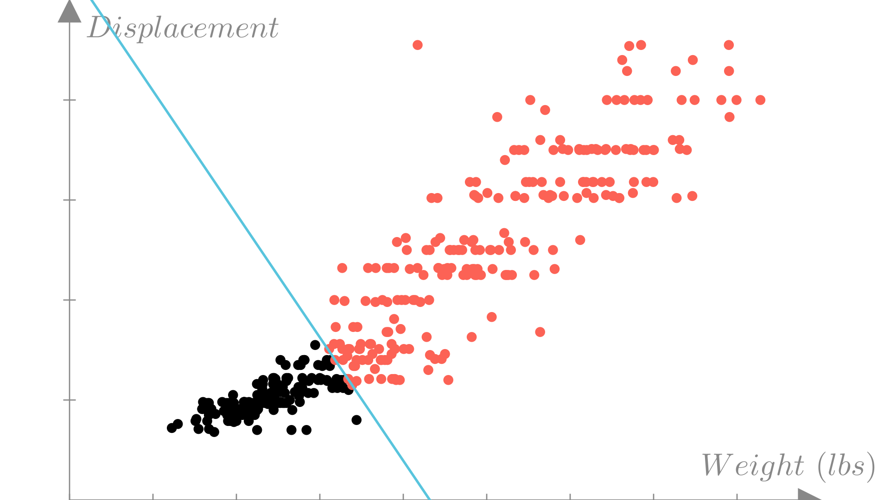

Manim Community v0.18.1
Lecture 3: Logistic regression
Classification
Categorical outputs
In the last lecture we considered approximating functions of the form:
\[ y=f(\mathbf{x}), \quad \text{Input: } \mathbf{x} \in\mathbb{R}^n \longrightarrow \text{ Output: }y \in\mathbb{R} \]
In many real-world problems, the output we want to model is not a continuous value, but a categorical value.

Binary outputs
In the simplest case there are two possible outputs.

We use the set \(\{0, 1\}\) to denote the possible outputs for a binary categorical function.
\[ y=f(\mathbf{x}), \quad \text{Input: } \mathbf{x} \in\mathbb{R}^n \longrightarrow \text{ Output: }y \in \{0, 1\} \]
We might say that \(0 = \textbf{"cat"}\) and \(1=\textbf{"dog"}\).
We call prediction of a categorical output classification.
Visualizing categorical functions
Consider the fuel efficiency example from the previous lecture.
\[ \text{Input: } \mathbf{x}_i= \begin{bmatrix} \text{Weight} \\ \text{Horsepower} \\ \text{Displacement} \\ \text{0-60mph} \end{bmatrix}, \quad \text{Output: } y_i = \begin{cases} 1: \text{Meets target } (MPG \geq 30) \\ 0: \text{Fails to meet target } (MPG < 30) \\ \end{cases} \]
Visualizing categorical functions
With this new output definition our dataset will look like:
\[ \text{Honda Accord: } \begin{bmatrix} \text{Weight:} & \text{2500 lbs} \\ \text{Horsepower:} & \text{ 123 HP} \\ \text{Displacement:} & \text{ 2.4 L} \\ \text{0-60mph:} & \text{ 7.8 Sec} \end{bmatrix} \longrightarrow \text{1 (Meets target)} \]
\[ \text{Dodge Aspen: } \begin{bmatrix} \text{Weight:} & \text{3800 lbs} \\ \text{Horsepower:} & \text{ 155 HP} \\ \text{Displacement:} & \text{ 3.2 L} \\ \text{0-60mph:} & \text{ 6.8 Sec} \end{bmatrix} \longrightarrow \text{0 (Does not meet target)} \]
\[ \vdots \quad \vdots \]
Visualizing categorical functions
Manim Community v0.18.1

Making binary predictions
We could fit a linear regression model to our binary data, by simply treating the labels \(0\) and \(1\) as real-valued outputs.
Manim Community v0.18.1
Making binary predictions
A more suitable prediction function would only output one of our two possible labels \(\{0, 1\}\). Using a cutoff (typically 0), as follows:
\[ f(\mathbf{x})=\mathbf{x}^T\mathbf{w} \quad \longrightarrow \quad f(\mathbf{x})=\begin{cases} 1\ \text{ if }\ \mathbf{x}^T\mathbf{w} \geq 0 \\ 0\ \text{ if }\ \mathbf{x}^T\mathbf{w} < 0\end{cases} \]
We might also write this as:
\[ f(\mathbf{x}) = \mathbb{I}(\mathbf{x}^T\mathbf{w} \geq 0) \]
Where \(\mathbb{I}\) is an indicator function that is simply \(1\) if the boolean expression is true and \(0\) otherwise.
Making binary predictions
This gives us a prediction function that looks like step function in 1 dimension:
Manim Community v0.18.1
Making binary predictions
For our efficiency example, the binary prediction function can be written as:
\[ \text{Meets target} = f(\mathbf{x})= \]
\[ \big((\text{weight})w_1 + (\text{horsepower})w_2 + (\text{displacement})w_3 + (\text{0-60mph})w_4 + b\big) \geq 0 \]
Or in matrix notation:
\[ f(\mathbf{x})= \left( \begin{bmatrix} \text{Weight} \\ \text{Horsepower} \\ \text{Displacement} \\ \text{0-60mph} \\ 1 \end{bmatrix} \cdot \begin{bmatrix} w_1 \\ w_2\\ w_3 \\ w_4\\ b\end{bmatrix} \geq 0\right) \]
In this form we can see that the sign of each weight parameter determines whether the corresponding feature is more predictive of label \(1\) or \(0\) and to what extent.
Making binary predictions
This has a geometric interpretation if we think of \(\mathbf{w}\) and \(\mathbf{x}\) as vectors. If the angle between \(\mathbf{w}\) and \(\mathbf{x}\) is in the range \([-\frac{\pi}{2}, \frac{\pi}{2}]\) (or \([-90^o, 90^o]\) in degrees), then the prediction will be \(1\).
Manim Community v0.18.1

Descision boundaries
We can visualize a classification dataset as a function of two variables using color to distinguish between observations with each label. In this example we’ll look at weight and engine displacement.
Manim Community v0.18.1
Descision boundaries
The decision boundary is the border between regions of the input space corresponding to each prediction. For a linear classification model the decision boundary is line or plane:
\[\mathbf{x}^T\mathbf{w}=0\]
Manim Community v0.18.1

Measuring error
A natural measure for error for binary classifiers is accuracy. The accuracy of a prediction function is the fraction of observations where the prediction matches the true output:
\[ \textbf{Accuracy} = \frac{1}{N} \sum_{i=1}^N \mathbb{I}\big(f(\mathbf{x}_i) = y_i\big) \]
Model accuracy: 0.8291Manim Community v0.18.1

Logistic Regression
The Bernoulli distribution
The Beroulli distribution is a distribution over binary outcomes (0 or 1). It is parameterized simply by \(q=p(y=1)\)
\[ p(y)=\begin{cases} q\quad\ \ \ \ \ \ \ \text{if }\ y=1\\ 1-q\quad \text{if }\ y=0\\ \end{cases}\quad q\in[0,1],\ y\in\{0, 1\} \]
We can also write this as:
\[ p(y) = q^y(1-q)^{1-y} \]
The log-probability or log-likelihood is then:
\[ \log p(y) = y\log q + (1-y)\log(1-q) \]
A probabilistic model for binary classification
Last lecture saw a probabilistic model for linear regression could be defined as:
\[ y_i \sim \mathcal{N}(\mathbf{x}^T\mathbf{w},\ \sigma^2) \]
We’d ideally like to define a similar model for the case of binary outputs using the Bernoulli distribution. However we need to enforce that the Bernoulli parameter is in \([0,1]\)
\[ \mathbf{x}^T\mathbf{w}\notin [0, 1] \quad \longrightarrow \quad y_i \sim \mathbf{Bernoulli}(\mathbf{ q=? })\quad \]
So we need a function that can map \(\mathbf{x}^T\mathbf{w}\) to \([0,1]\)
\[ \textbf{Need }\ f(x):\ \mathbb{R} \longrightarrow [0,1] \]
\[ \textbf{Input: } x \in \mathbb{R} \longrightarrow \textbf{Output: } y \in [0,1] \]
Sigmoid function
The sigmoid (or logistic) function is a convenient choice
\[ \sigma(x) = \frac{1}{1+e^{-x}} \]
Manim Community v0.18.1

Sigmoid function
The sigmoid function has some nice properties
\[ \sigma(0) = 0.5 \]
\[ 1-\sigma(x) = \sigma(-x) \]
\[ \frac{d}{dx}\sigma(x) = \sigma(x)\big(1-\sigma(x)\big) \]
Manim Community v0.18.1

A probabilistic model for binary classification
With the sigmoid function we can define our probabilistic model
\[ y_i \sim \mathbf{Bernoulli}\big(\mathbf{ \sigma(\mathbf{x}_i^T\mathbf{w} })\big) \]
\[ p(y_i = 1) = \sigma(\mathbf{x}_i^T\mathbf{w}), \quad p(y_i=0)=1-\sigma(\mathbf{x}_i^T\mathbf{w})=\sigma(-\mathbf{x}_i^T\mathbf{w}) \]
Manim Community v0.18.1
A probabilistic model for binary classification
We see that if we choose a probability cutoff of \(0.5\), our decision boundary doesn’t change!
\[ p(y_i=1)\geq 0.5 \quad \longrightarrow \quad \mathbf{x}^T\mathbf{w}\geq 0 \]
Manim Community v0.18.1

Maximum likelihood estimation
Let’s review how to find the parameters of a model using maximum likelihood estimation
\[ \mathbf{w}^* = \underset{\mathbf{w}}{\text{argmax}} \ p(\mathbf{y} \mid \mathbf{X}, \mathbf{w}) =\underset{\mathbf{w}}{\text{argmax}} \ p(y_1,...,y_N \mid \mathbf{x}_1, ...,\mathbf{x}_N, \mathbf{w}) \]
Generally our model also assumes conditional independence across observations so:
\[ p(y_1,...,y_N \mid \mathbf{x}_1, ...,\mathbf{x}_N, \mathbf{w}) = \prod_{i=1}^N p(y_i\mid \mathbf{x}_i, \mathbf{w}) \]
Maximum likelihood estimation
For convenience, it is typical to frame the optimal value in terms of the negative log-likelihood rather than the likelihood, but the two are equivalent.
\[ \underset{\mathbf{w}}{\text{argmax}} \prod_{i=1}^N p(y_i\mid \mathbf{x}_i, \mathbf{w}) = \underset{\mathbf{w}}{\text{argmin}} - \sum_{i=1}^N \log p(y_i \mid \mathbf{x}_i, \mathbf{w}) = \textbf{NLL}(\mathbf{w}, \mathbf{X}, \mathbf{y}) \]
We see that the negative log-likelihood is a natural loss function to optimize to find \(\mathbf{w}^*\).
\[ \textbf{Loss}(\mathbf{w}) =\textbf{NLL}(\mathbf{w}, \mathbf{X}, \mathbf{y})=- \sum_{i=1}^N \log p(y_i \mid \mathbf{x}_i, \mathbf{w}) \]
Maximum likelihood estimation
We can now write the maximum likelihood loss for logistic regression.
\[ \mathbf{NLL}(\mathbf{w}, \mathbf{X}, \mathbf{y}) = -\sum_{i=1}^N y_i\log \sigma(\mathbf{x}^T\mathbf{w}) + (1-y_i)\log(1-\sigma(\mathbf{x}^T\mathbf{w})) \]
\[ =-\sum_{i=1}^N y_i\log \sigma(\mathbf{x}^T\mathbf{w}) + (1-y_i)\log \sigma(-\mathbf{x}^T\mathbf{w}) \]
\[ \textbf{Ideally: }\ p(y_i\mid \mathbf{x}_i, \mathbf{w})=1,\ \forall (\mathbf{x}_i, y_i)\in \mathcal{D} \]
\[ \mathbf{NLL}(\mathbf{w}, \mathbf{X}, \mathbf{y}) = -\mathbf{y}^T\log \sigma(\mathbf{X}\mathbf{w}) \]
Comparing loss functions
Loss for \(y=0\) as a function of \(z=\mathbf{x}^T\mathbf{w}\)
\[ \textbf{Let: }\ z=\mathbf{x}^T\mathbf{w} \]
Manim Community v0.18.1
Multi-class classification
Multi-class prediction functions
We will typically use a set of integers \(\{0,1, 2,...,C\}\) to denote the possible outputs for a general categorical function.
Therefore in general we are considering functions of the form:
\[ y=f(\mathbf{x}), \quad \text{Input: } \mathbf{x} \in\mathbb{R}^n \longrightarrow \text{ Output: }y \in \{0, 1, 2, ...,C\} \]
Multi-class prediction functions
It’s important to note that we are not assuming that the ordering of labels is meaningful For instance if we’re classifying images of animals we might set the labels such that:
\[ \textbf{0: Cat},\quad \textbf{1: Dog},\quad \textbf{2: Mouse} \]
But this is equally valid:
\[ \textbf{0: Dog},\quad \textbf{1: Mouse},\quad \textbf{2: Cat} \]
Multi-class prediction functions
A simple prediction function for multiclass classification is:
\[ f(\mathbf{x}) = \underset{c\in\{0...C\}}{\text{argmax}}\ \mathbf{x}^T\mathbf{w}_c \]
Alternatively:
\[ f(\mathbf{x}) = \underset{c\in\{0...C\}}{\text{argmax}}\ (\mathbf{x}^T\mathbf{W})_c, \quad \mathbf{W} \in \mathbb{R}^{d\times C} \]

Multi-class prediction functions
\[ f(\mathbf{x}) = \underset{c\in\{0...C\}}{\text{argmax}}\ (\mathbf{x}^T\mathbf{W})_c, \quad \mathbf{W} \in \mathbb{R}^{d\times C} \]
This function reduces to the same one we saw before for the case of \(C=2\):
\[ f(\mathbf{x}) = \underset{c\in\{0,1\}}{\text{argmax}}\ (\mathbf{x}^T\mathbf{W})_c = \mathbb{I}(\mathbf{x}^T\mathbf{w}_1 - \mathbf{x}^T\mathbf{w}_0 \geq 0) \]
\[ =\mathbb{I}(\mathbf{x}^T(\mathbf{w}_1 - \mathbf{w}_0) \geq 0) \quad \longrightarrow \quad \mathbb{I}(\mathbf{x}^T\mathbf{w} \geq 0), \quad \mathbf{w}=\mathbf{w}_1-\mathbf{w}_0 \]
This means the boundary between any two predictions is linear.

Categorical distribution
The Categorical distribution is a distribution over several distinct (discrete) outcomes. It’s parameterized by a vector of probabilities for each outcome:
\[ p(y=c) = q_c, \quad y\in \{1...C\} \]
\[ \mathbf{q} \in \mathbb{R}^C\quad q_c \geq 0\ \forall c\in \{1...C\}\quad \sum_{c=1}^C q_c=1 \]
It can also be written as:
\[ p(y)=\prod q_c^{\mathbb{I}(y=c)} \]
The log-likelihood is then:
\[ \log p(y) = \sum_{c=1}^C \mathbb{I}(y=c)\log q_c = \log q_y \]
A probabilistic model for multi-class classification
Once again we need to translate our linear function output into a valid parameter for this distribution:
\[ y_i\sim \mathbf{Categorical}(\mathbf{q}=?) \]
\[ \mathbf{q}=\mathbf{x}^T\mathbf{W}? \]
\[ \mathbf{x}^T\mathbf{W}\in \mathbb{R}^C,\quad q_c \ngeq 0\ \forall c\in \{1...C\}, \quad \sum_{c=1}^C q_c\neq1 \]
\[ \textbf{Need }\ f(\mathbf{x}):\ \mathbb{R}^C \longrightarrow [0,\infty)^C,\ \sum_{i=1}^Cf(\mathbf{x})_c = 1 \]
Softmax function
Here we can use the softmax function!
\[ \text{softmax}(\mathbf{x})_c = \frac{e^{x_c}}{\sum_{j=1}^Ce^{x_j}} \]
A probabilistic model for multi-class classification
Now we can define our probabilistic model as:
\[ y_i\sim \mathbf{Categorical}\big(\text{softmax}(\mathbf{x}^T\mathbf{W})\big) \]
\[ p(y_i=c) = \text{softmax}(\mathbf{x}^T\mathbf{W})_c=\frac{e^{\mathbf{x}^T\mathbf{w}_c}}{\sum_{j=1}^Ce^{\mathbf{x}^T\mathbf{w}_j}} \]
Maximum likelihood estimation
\[ \textbf{Loss}(\mathbf{W}) =\textbf{NLL}(\mathbf{W}, \mathbf{X}, \mathbf{y})=- \sum_{i=1}^N \log p(y_i \mid \mathbf{x}_i, \mathbf{W}) \]
\[ = \sum_{i=1}^N \log\ \text{softmax}(\mathbf{x}_i^T\mathbf{W})_{y_i} = \sum_{i=1}^N \log \frac{e^{\mathbf{x}_i^T\mathbf{w}_{y_i}}}{\sum_{j=1}^Ce^{\mathbf{x}_i^T\mathbf{w}_{j}}} \]
\[ =\sum_{i=1}^N \bigg(\mathbf{x}_i^T\mathbf{w}_{y_i}- \log\sum_{j=1}^Ce^{\mathbf{x}_i^T\mathbf{w}_{j}}\bigg) \]
Maximum likelihood estimation
In this case our parameters are a matrix
\[ \nabla_{\mathbf{W}} \mathbf{NLL}(\mathbf{W}, \mathbf{X}, \mathbf{y})= \begin{bmatrix} \frac{\partial \mathbf{NLL}}{\partial W_{11}} & \frac{\partial \mathbf{NLL}}{\partial W_{12}} & \dots & \frac{\partial \mathbf{NLL}}{\partial W_{1C}} \\ \frac{\partial \mathbf{NLL}}{\partial W_{21}} & \frac{\partial \mathbf{NLL}}{\partial W_{22}} & \dots & \frac{\partial \mathbf{NLL}}{\partial W_{2C}} \\ \vdots & \vdots & \ddots & \vdots\\ \frac{\partial \mathbf{NLL}}{\partial W_{d1}} & \frac{\partial \mathbf{NLL}}{\partial W_{d2}} & \dots & \frac{\partial \mathbf{NLL}}{\partial W_{dC}} \end{bmatrix} \]
We can still perform gradient descent as before.
\[ \mathbf{W}^{(i+1)} \leftarrow \mathbf{W}^{(i)} - \alpha \nabla_{\mathbf{W}} \mathbf{NLL}(\mathbf{W}^{(i)}, \mathbf{X}, \mathbf{y}) \]
Evaluating models
Training and test datasets
In machine learning we are typically less interested in how our model predicts the data we’ve already seen than we are in how well it makes predictions for new data. One way to estimate how well our model our model will generalize to new data is to hold out data while fitting our model. To do this we will split our dataset into two smaller datasets: a training dataset that we will use to fit our model, and a test or held-out dataset that we will only use to evaluate our model. By computing the loss on this test dataset, we can get a sense of how well our model will make prediction for new data.
\[\mathcal{D} = \{ (\mathbf{x}_1, y_1),\ (\mathbf{x}_2, y_2),\ ... \,(\mathbf{x}_N, y_N) \}\quad \longrightarrow \quad \]
\[ \mathcal{D}_{train} = \{ (\mathbf{x}_1, y_1),\ (\mathbf{x}_2, y_2),\ ... \,(\mathbf{x}_{Ntrain}, y_{Ntrain}) \},\ \mathcal{D}_{test} = \{ (\mathbf{x}_1, y_1),\ (\mathbf{x}_2, y_2),\ ... \,(\mathbf{x}_{Ntest}, y_{Ntest}) \} \]
Manim Community v0.18.1
Manim Community v0.18.1
Manim Community v0.18.1
Manim Community v0.18.1